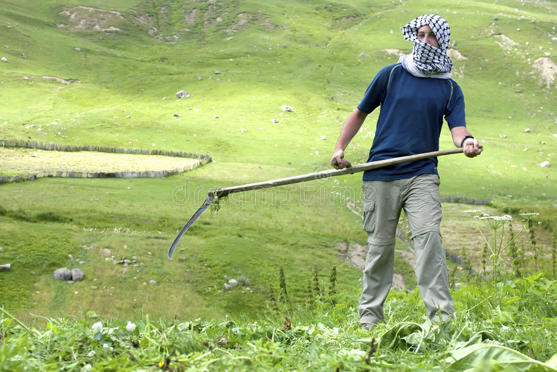
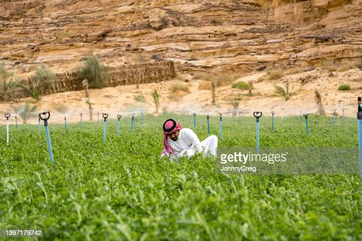

التوصيات
اراء الناس في خدماتنا

ابو جاسم
خدمة جيدة ساعدتني في معرفة الموارد الضائعة في الارض و تحديد احتياجات الارض من المواد الكيميائية

محمد باسم
لقد ساعدتني في معرفة نوع التربة و نوع المياه المناسبة و معرفة الحل لمشكلتي

عبد الله
اعجبني سهولة التواصل و تقديم الخدمة بسرعة و دقة عالية من دون الحاجة الى الذهاب لاكثر من موقع.